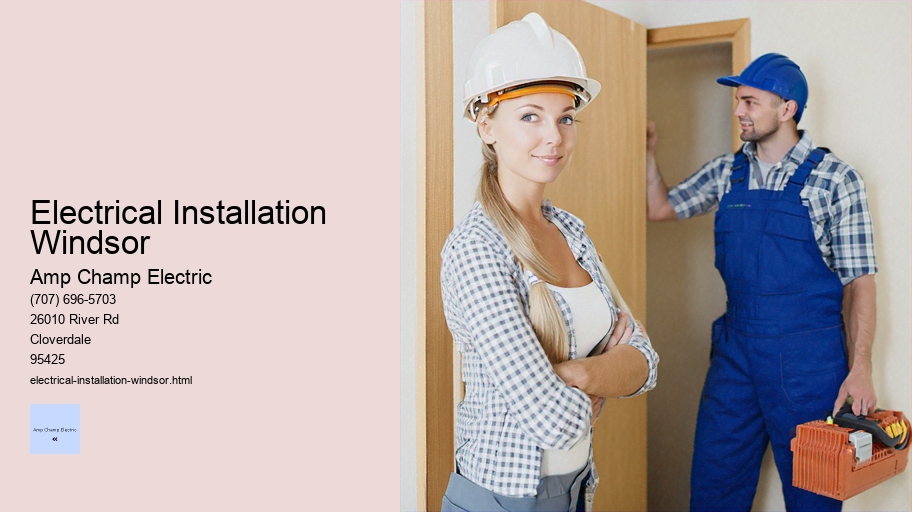

News
Electrical Installation Healdsburg
Electrical Installation Healdsburg
Electrical Installation Santa Rosa
Electrical Installation Cloverdale
Electrical Installation Geyserville
Electrical Installation Windsor
Maintenance and Repair Services Healdsburg
Maintenance and Repair Services Healdsburg
Maintenance and Repair Services Santa Rosa
Maintenance and Repair Services Cloverdale
Maintenance and Repair Services Geyserville
Maintenance and Repair Services Windsor
Electrical Safety Inspections Healdsburg
Electrical Safety Inspections Healdsburg
Electrical Safety Inspections Santa Rosa
Electrical Safety Inspections Cloverdale
Electrical Safety Inspections Geyserville
Electrical Safety Inspections Windsor
Energy Efficiency Upgrades Healdsburg
Energy Efficiency Upgrades Healdsburg
Energy Efficiency Upgrades Santa Rosa
Energy Efficiency Upgrades Cloverdale
Energy Efficiency Upgrades Geyserville
Energy Efficiency Upgrades Windsor
Specialty Electrical Services Healdsburg
Specialty Electrical Services Healdsburg
Specialty Electrical Services Santa Rosa
Specialty Electrical Services Cloverdale
Specialty Electrical Services Geyserville
Specialty Electrical Services Windsor
About Us
Contact Us

Electrical Installation Windsor
Outdoor Lighting
Title: Understanding the Intricacies of Electrical Installation
Electrical installation is an integral aspect of modern infrastructure that involves the setup of electrical systems within a building or any other type of construction. It is a complex process that requires meticulous planning, precision, and adherence to safety standards to ensure that electricity can be safely used for various purposes like lighting, heating, and powering appliances. In this essay, we will explore what electrical installation entails, its importance, and the considerations involved in executing it proficiently.
Electrical Installation Windsor - Outdoor Lighting
Electrical Installation
Pool and Spa Wiring
Electric Vehicle Charging Station Installation
Electrical Contracting
Electrical Fires
Firstly, let's delve into what constitutes an electrical installation. Broadly speaking, it encompasses all fixed electrical equipment that is supplied through an electric meter. This range includes wiring, sockets, switches, lighting fixtures, and distribution boards – essentially everything from where the power enters a property to where it is utilized by end devices. A well-designed electrical system not only provides convenience but also ensures safety from potential hazards such as electric shocks and fires.
The importance of proper electrical installation cannot be overstated. Electricity plays a crucial role in our daily lives; hence having a reliable and safe electrical system is paramount. Proper installations can prevent accidents related to faulty wiring or overloaded circuits; they contribute significantly to energy efficiency by reducing wastage; moreover they are essential for compliance with legal standards which vary from country to country but often adhere to international guidelines like those set forth by the International Electrotechnical Commission (IEC).
Now let's discuss the considerations and steps involved in carrying out an effective electrical installation:
1) Planning: Before any physical work begins, thorough planning must take place. This includes creating detailed blueprints that show the layout of wires’ paths throughout the building and determining locations for outlets and fixtures based on functionality and aesthetics.
2) Compliance with Regulations: Every region has specific codes governing how installations should be performed. These regulations are designed not only for safety but also for ensuring compatibility between different systems (e.g., telecommunications).
Electrical Contracting
An understanding of these rules is imperative when designing an electrical system.
3) Choosing Quality Materials: The longevity and safety of an electric system depend heavily on using high-quality materials that meet industry standards.
4) Professional Expertise: Given its complexity and risks associated with electricity handling – hiring licensed professionals who have experience in this field becomes necessary because they are trained in best practices for both execution & troubleshooting problems that may arise during or after installation.
5) Testing & Verification: After completion of physical work – testing every component prior to use ensures there are no defects or issues lurking within your new electric setup which could pose future dangers if left unchecked.
6) Maintenance: Post-installation maintenance checks at regular intervals help catch any deterioration early on before significant damage occurs potentially leading catastrophic failures down line due lack upkeep attention paid towards maintaining integrity over time.
In conclusion - whether you're constructing new premises renovating existing ones - getting your electrics right isn’t just about flipping switch hoping light comes on! It’s art science combined requiring knowledge expertise dedication make sure powers our world does so reliably safely efficiently too! As technology continues evolve society becomes even more dependent upon electronics day-to-day operations significance good quality well-maintained electronic install cannot overstressed making foundational pillar civilization today tomorrow beyond!
Residential Wiring and Socket Installation: A Foundation of Modern Living
Pool and Spa Wiring
In the tapestry of modern living, residential wiring and socket installation form the warp and weft that hold together our daily experiences with electricity. This intricate craft is not merely about connecting wires but represents a fundamental aspect of building safe, functional, and comfortable homes. The process involves meticulous planning, execution, and adherence to standards that ensure our appliances run smoothly, our lights illuminate spaces, and our gadgets charge effectively—all while keeping safety paramount.
The journey of residential wiring begins with an understanding of electrical circuits. Homes are typically wired in parallel circuits which allow for consistent voltage across various outlets and fixtures, enabling multiple devices to operate independently without affecting each other's performance. The artistry lies in creating a network where power is distributed efficiently and reliably throughout the house.
Before any actual wiring takes place, a detailed plan is drawn up by electricians. This blueprint will outline circuit layouts, including where sockets will be installed based on anticipated electrical needs—a practice that requires foresight into future demands as well as present requirements. The placement of sockets is determined by local regulations which often dictate minimum distances from water sources to prevent hazards like short-circuits or electrocution.
Once the planning phase is complete, the next step entails installing conduits—protective tubes that shield wires from environmental factors such as heat or moisture. These conduits are usually embedded within walls or ceilings during construction; however retrofitting in existing structures can be more challenging due to obstructions like masonry or finished surfaces.
The choice of wire gauge—a measure of its thickness—is crucial since it determines how much current a wire can safely carry without overheating. Residential installations typically use copper wire due to its excellent conductivity properties coupled with reasonable cost and durability against corrosion.
As wires snake through conduits reaching their destinations—sockets patiently await their connections hidden within junction boxes recessed into walls. These humble receptacles come in various shapes and sizes tailored for different purposes from standard household plugs to specialized ones designed for appliances requiring higher voltages or currents.
Installation itself must comply with guidelines set forth by bodies such as the National Electrical Code (NEC) in the United States which governs everything from how many outlets should be on one circuit to what kind of protective measures need to be taken for particular applications. Electricians employ tools like wire strippers, pliers, screwdrivers along with instruments like voltage testers ensuring every connection they make not only works but does so safely.
After wiring up sockets comes testing—each outlet’s functionality is verified along with checking if there are any potential issues such as reversed polarity or ground faults that could lead to dangerous situations down the line. Only after passing these stringent checks can power finally flow through this newly woven web turning it alive with electricity ready to serve its purpose at a flick of switch or push of button.
In conclusion residential wiring socket installation may seem mundane but it's anything but trivial—it's an essential service vital for powering all facets life within our homes from simplest gadget most complex home entertainment system all while guaranteeing safety convenience comfort residents who rely upon them day out.
electrical-installation-healdsburg.html
electrical-installation-santa-rosa.html
electrical-installation-cloverdale.html
electrical-installation-geyserville.html
electrical-installation-windsor.html
maintenance-and-repair-services-healdsburg.html
maintenance-and-repair-services-santa-rosa.html
maintenance-and-repair-services-cloverdale.html
maintenance-and-repair-services-geyserville.html
maintenance-and-repair-services-windsor.html
electrical-safety-inspections-healdsburg.html
electrical-safety-inspections-santa-rosa.html
electrical-safety-inspections-cloverdale.html
electrical-safety-inspections-geyserville.html
electrical-safety-inspections-windsor.html
energy-efficiency-upgrades-healdsburg.html
energy-efficiency-upgrades-santa-rosa.html
energy-efficiency-upgrades-cloverdale.html
energy-efficiency-upgrades-geyserville.html
energy-efficiency-upgrades-windsor.html
specialty-electrical-services-healdsburg.html
specialty-electrical-services-santa-rosa.html
specialty-electrical-services-cloverdale.html
specialty-electrical-services-geyserville.html
specialty-electrical-services-windsor.html
privacy-policy.html
sitemap.html
sitemap.xml
about-us.html
feed.xml
Commercial building electrical layout design
Commercial Building Electrical Layout Design: An Insight into Engineering Brilliance
The design of electrical layouts in commercial buildings is an intricate task that requires precision, foresight, and a comprehensive understanding of both electrical systems and the architecture they will serve. It is a cornerstone in the construction process, demanding not just technical expertise but also an appreciation for safety, efficiency, and future-proofing.
At its core, the electrical layout design for a commercial building involves creating a plan that outlines where all electrical components – from wirings to sockets, switches, light fixtures, and complex machinery connections – will be located within the structure. This blueprint is essential for ensuring that when the building comes to life, it functions seamlessly with an adequate power supply to meet all operational needs without compromising on safety or aesthetics.
Why Is Commercial Building Electrical Layout Design Important?
Safety stands as the paramount concern in any electrical system design. Faulty wiring or poorly designed circuits can lead to catastrophic consequences such as fires or electrocution. Additionally, adherence to local codes and standards cannot be understated; these regulations are put in place not only to protect occupants but also to ensure that insurance requirements are met.
Electrical Unions
Efficiency is another crucial aspect of this process. A well-designed layout facilitates optimal power distribution throughout the building while minimizing energy losses. The right balance must be struck between providing enough outlets and circuits for maximum productivity and avoiding excessive installation costs or energy consumption.
Future-proofing is an increasingly significant factor given today's rapidly advancing technology landscape. Buildings must have flexible systems capable of adapting to new technologies without requiring complete overhauls—this could range from incorporating smart lighting systems to preparing infrastructure for high-speed internet connectivity.
The Process of Designing Electrical Layouts
Creating an effective commercial building electrical layout begins with collaboration between architects, engineers, developers, and sometimes even future tenants. Understanding how spaces will be used dictates many aspects of the design; office buildings necessitate different solutions than warehouses or retail spaces.
From there, designers develop detailed plans indicating every component's location—the routes wires will take through walls and ceilings; where panels will sit; how fixtures align with architectural features; etc.—while considering practical pathways for installation and maintenance access.
Load calculations play a vital role at this stage too. Engineers estimate the total power requirement based on equipment usage patterns and peak demand times so that transformers and generators are appropriately sized—an essential step towards ensuring reliability under varying load conditions.
Additionally, sustainability practices are becoming more integrated into these designs—from LED lighting systems with motion sensors conserving energy when rooms aren't occupied to solar panel installations contributing renewable energy sources—all reflecting modern society’s growing environmental consciousness.
Challenges Faced by Designers
One of the toughest challenges facing designers is space constraints within urban environments which may limit options for routing conduits or placing large pieces of equipment like transformers. Another difficulty arises from retrofitting older buildings which were not originally designed with modern electrical loads in mind—requiring creative problem-solving skills from designers.
Legal hurdles can present themselves too—navigating through local codes that differ from area to area demands up-to-date knowledge on part of designers who must ensure compliance at every turn during their projects' lifecycle.
Conclusion
In conclusion, designing a commercial building's electrical layout isn't merely about connecting wires—it's about envisioning how people interact within spaces powered by those wires. It blends engineering prowess with aesthetic sensibilities while enforcing stringent safety standards—a challenging task indeed but one which yields immense satisfaction when seeing a project move from paper sketches into physical reality humming safely with electric life. The unsung heroes behind our illuminated workspaces and buzzing marketplaces deserve recognition for their critical contribution towards shaping functional yet inspiring commercial habitats.
Lighting fixture installation
Lighting Fixture Installation: An Illuminating Guide to Brightening Your Spaces
The installation of lighting fixtures is not merely a practical necessity but an art form that marbles the intersection between functionality and aesthetics. It is a task that demands a blend of technical acumen, design sensitivity, and safety awareness. In this essay, we'll explore the various aspects of lighting fixture installation and how it can transform your living or working environment.
Firstly, let us consider the functional purpose of lighting – to illuminate our spaces so we can perform tasks comfortably without straining our eyes. Whether in the home, office, or public spaces like museums and parks, adequate lighting ensures visibility and contributes to safety. However, beyond mere utility lies the potential for lighting to shape mood, create ambiance, and highlight architectural features or artworks.
Before commencing any installation project, one must carefully plan by evaluating the space's needs. This involves considering room size, ceiling height, color schemes, natural light sources as well as determining what activities will occur in each space - all these factors influence the choice of fixtures.
Selecting appropriate fixtures is pivotal; they come in myriad styles from classic chandeliers to modern LED panels. The selection process often begins with deciding on direct versus indirect lighting—direct lighting aims downward for task-oriented areas while indirect casts a softer glow suitable for creating ambience.
Next comes placement strategy – where should each fixture go? Overhead lights might serve as general illumination whereas table lamps could function as accent lights. Wall sconces may provide hallway guidance or flank a bathroom mirror effectively. Remember that placement influences shadow play and brightness distribution throughout your area.
Safety considerations are crucial when dealing with electricity. Turning off power at the circuit breaker is step one before any hands-on work commences. It's also essential to ensure compatibility between existing wiring and new fixtures regarding voltage requirements; otherwise risk of short circuits or fires increases significantly.
Installation itself varies depending on fixture type but generally involves mounting hardware securely into either ceiling joists or wall studs followed by electrical connections adhering strictly to code regulations - black wires connect to black (hot), white to white (neutral), green or bare copper wire attaches firmly onto grounding screw.
Electric Vehicle Charging Station Installation
For those less experienced with electrical tasks seeking professional help isn't just advisable—it’s necessary not only for personal safety but also for ensuring installations meet local building codes which often require licensed electricians carry out such work.
Once installed correctly you can then marvel at your handiwork though truly it’s during nightfall that magic happens when flicking switches bathes rooms in desired hues bringing forth warmth where coldness might have resided offering clarity amidst shadows proving indeed that right light transforms environments substantially both practically aesthetically speaking thus making fixture installation not mundane chore rather creative endeavor rewarding those who undertake it with enhanced living experiences day after day night after night.
Maintenance and Repair Services Healdsburg
Electrical panel and circuit breaker setup
An electrical panel, often known as a breaker panel, distribution board, or panelboard, is a critical component in any residential or commercial building's electrical system. This hub of wiring serves as the central point where the power from the utility company enters and is then distributed throughout the premises. It plays an essential role in managing and protecting the complex network of electrical circuits that power everything from lights and appliances to machinery and computer systems.
Understanding the anatomy of an electrical panel helps appreciate its significance. Typically encased in a metal box mounted on a wall (often in basements, garages, or utility rooms), it houses several important components: circuit breakers or fuses, neutral bars, grounding wires, and bus bars. The size of the panel will vary depending on the property’s energy demands; larger buildings generally require more capacity than smaller ones.
The most visible elements inside an electrical panel are the circuit breakers – switches designed to protect an electrical circuit by interrupting power flow upon detecting excess current which could cause wire overheating leading to potential fires.
Electrical Installation
Each breaker is connected to a specific circuit within your home or business and is calibrated to trip when current exceeds its safe operating limit. Circuit breakers come in various sizes typically denoted by their amperage rating which must be matched appropriately with the needs of each circuit.
Installation of an electrical panel should always be performed by licensed electricians due to high risks involved with electricity. During setup, they ensure that every connection complies with local codes and regulations for safety purposes including proper grounding which protects against electric shock hazards.
Modern panels also feature ground fault circuit interrupter (GFCI) and arc fault circuit interrupter (AFCI) breakers for enhanced protection in areas prone to moisture such as bathrooms or kitchens (GFCIs) or where there is a higher risk for sparks that could start fires like bedrooms or living rooms (AFCIs).
Regular maintenance on your electrical panel is paramount as well - checking for loose connections signs of wear corrosion ensuring labels are clear so circuits can be easily identified during troubleshooting or repair scenarios.
In essence an optimized functioning electrical panel ensures not only efficient distribution but also safeguards against overloading short-circuiting electrocution fire hazards contributing greatly towards overall safety within any building environment while supporting our modern reliance on electricity day-to-day life activities work obligations alike.
To conclude effective design installation regular upkeep of both electrical panels circuit breaker setups are indispensable aspects maintaining reliable secure energy infrastructures homes businesses institutions fostering peace mind convenience technological advancements continue shape our world today tomorrow.
Grounding systems and safety measures
Title: The Importance of Grounding Systems and Safety Measures in Electrical Installations
Introduction:
Electricity is an indispensable aspect of modern life, powering our homes, workplaces, and various forms of technology. However, with the convenience and power that electricity provides comes the inherent risk of electrical hazards. To mitigate these risks and ensure safety, grounding systems are implemented as a fundamental component of electrical installations. This essay delves into the purpose of grounding systems, their role in ensuring safety measures are adhered to, and the various practices that make them effective.
Understanding Grounding Systems:
Grounding systems serve as a critical safety mechanism designed to protect people from electric shock and safeguard electrical devices from damage. The term "grounding" refers to the process by which an electrical circuit or equipment is connected directly to the earth's conductive surface. This connection provides a low-resistance pathway for fault currents—those unintended flows of electricity which can occur due to insulation failure or other issues—to safely dissipate into the ground.
The Role of Grounding in Safety Measures:
One crucial function of a grounding system is to prevent electric shock. In instances where live wires come into contact with metal parts that humans might touch (such as appliance casings), without proper grounding, these surfaces could become energized posing serious injury or even fatality upon contact. A grounding system ensures that any stray voltage is redirected away from these surfaces toward the earth.
Additionally, grounding limits the potential buildup of static electricity which reduces the risk of sparks—a significant concern in environments containing flammable substances where such sparks could lead to explosions or fires.
Ground Fault Circuit Interrupters (GFCIs) are another vital safety device often used in conjunction with grounding systems. GFCIs quickly cut off power when they detect a difference between incoming and outgoing current—indicative of electricity flowing along an unintended path potentially through a person's body.
Electrical Installation Windsor - Outdoor Lighting
Electrical Unions
Electrical Outlet Installation
Electrical Installation
Pool and Spa Wiring
Electric Vehicle Charging Station Installation
Electrical Contracting
Electrical Fires
Best Practices for Effective Grounding Systems:
For grounding systems to be effective, several best practices must be adhered to during installation:
1. Correct Specifications: Grounding components must comply with national standards such as those set by National Electrical Code (NEC) in the United States.
2. Quality Materials: Using high-conductivity materials like copper ensures efficient current dissipation.
3. Proper Connections: All connections within a grounding system should be secure without any corrosion.
4. Regular Maintenance: Routine inspections help identify any degradation over time so necessary repairs can be made before safety is compromised.
5. Professional Installation: Certified electricians should perform installations ensuring adherence to all codes and regulations.
Conclusion:
A properly implemented grounding system plays an invaluable role in securing both human lives and electrical appliances against potential electrical hazards. It acts not just as a safeguard but also enhances functionality by providing stability within an electronic environment prone to fluctuations due to numerous factors including lightning strikes or surges.
Through strict adherence to established guidelines for design, installation, maintenance—and supportive measures like GFCIs—the integration of effective grounding systems remains one of most crucial aspects towards achieving comprehensive electrical safety measures in residential, commercial, and industrial settings alike.
The seamless interplay between well-designed grounded infrastructure and proactive safety protocols underscores our collective commitment towards fostering secure environments where electricity continues serving humanity’s needs while minimizing associated dangers through intelligent engineering solutions rooted deeply within principles grounded — quite literally — on solid ground.
About
Windsor
may refer to:
About Windsor
Check our other pages :
Electrical Installation Geyserville
Electrical Installation Santa Rosa
Electrical Safety Inspections Cloverdale
Energy Efficiency Upgrades Cloverdale
Electrical Safety Inspections Geyserville
Frequently Asked Questions
What types of electrical installation services are available in Windsor?
In Windsor, a wide range of electrical installation services are available, including residential and commercial wiring, lighting installation, electrical panel upgrades, home automation systems, security system wiring, EV charger installations, and emergency repairs.
How do I choose a qualified electrician for my installation needs in Windsor?
To choose a qualified electrician in Windsor, verify their certification (such as being a licensed Red Seal electrician), check for reviews or testimonials from previous customers, ensure they have proper insurance coverage, and confirm that they comply with all local codes and regulations. Its also advisable to see if they offer warranties on their work.
What is the process for getting an electrical permit for my installation project in Windsor?
The process typically involves submitting an application to the local building department or municipality along with detailed plans of your project. The electrician you hire can often handle this for you. Once reviewed and approved, youll receive a permit that allows the electrical work to proceed legally. Inspections may be required during or after the work to ensure everything is up to code.
How much does it generally cost for an electrical installation service in Windsor?
The cost of electrical installation services in Windsor will vary based on the scope and complexity of the project. Minor installations like light fixtures might only cost a few hundred dollars while major rewiring or panel upgrades could run into thousands. Its best to obtain detailed quotes from several electricians before deciding on one for your project.
Electrical Installation Windsor